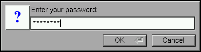
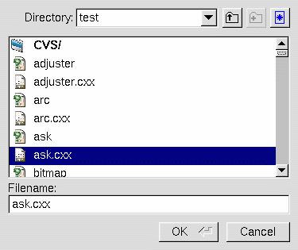

This appendix describes all of the fl_ functions and Fl::
methods. For a description of the FLTK widgets, see Appendix A.
Functions
The double version takes RGB values in the range 0.0 to 1.0. The
uchar version takes RGB values in the range 0 to 255. The title
argument specifies the label (title) for the window.

fl_color_chooser() pops up a window to let the user pick an
arbitrary RGB color. They can pick the hue and saturation in the "hue
box" on the left (hold down CTRL to just change the saturation), and
the brighness using the vertical slider. Or they can type the 8-bit
numbers into the RGB
Fl_Value_Input fields, or drag the mouse across them to adjust
them. The pull-down menu lets the user set the input fields to show
RGB, HSV, or 8-bit RGB (0 to 255).
This returns non-zero if the user picks ok, and updates the RGB
values. If the user picks cancel or closes the window this returns
zero and leaves RGB unchanged.
If you use the color chooser on an 8-bit screen, it will allocate
all the available colors, leaving you no space to exactly represent the
color the user picks! You can however use
fl_rectf() to fill a region with a simulated color using
dithering.
fl_show_colormap() pops up a panel of the 256 colors you can
access with fl_color() and lets the user
pick one of them. It returns the new color index, or the old one if
the user types ESC or clicks outside the window.

Displays a printf-style message in a pop-up box with an "OK" button,
waits for the user to hit the button. The message will wrap to fit the
window, or may be many lines by putting \n characters into it.
The enter key is a shortcut for the OK button.

Same as fl_message() except for the "!" symbol.

Displays a printf-style message in a pop-up box with an
"Yes" and "No" button and waits for the user to
hit a button. The return value is 1 if the user hits Yes, 0 if they
pick No. The enter key is a shortcut for Yes and ESC is a shortcut
for No.

Shows the message with three buttons below it marked with the strings
b0, b1, and b2. Returns 0, 1, or 2
depending on which button is hit. ESC is a shortcut for button 0 and
the enter key is a shortcut for button 1. Notice the buttons are
positioned "backwards" You can hide buttons by passing
NULL as their labels.

Pops up a window displaying a string, lets the user edit it, and
return the new value. The cancel button returns NULL. The
returned pointer is only valid until the next time fl_input()
is called. Due to back-compatability, the arguments to any printf
commands in the label are after the default value.

Same as fl_input() except an Fl_Secret_Input field is used.

Change the font and font size used for the messages in all the popups.
Returns a pointer to the box at the left edge of all the popups. You
can alter the font, color, or label (including making it a Pixmap),
before calling the functions.
FLTK provides a "tab completion" file chooser that makes it easy to
choose files from large directories. This file chooser has several
unique features, the major one being that the Tab key completes
filenames like it does in Emacs or tcsh, and the list always shows all
possible completions.

fl_file_chooser() pops up the file chooser, waits for the user
to pick a file or Cancel, and then returns a pointer to that filename
or NULL if Cancel is chosen.
message is a string used to title the window.
pattern is used to limit the files listed in a directory to
those matching the pattern. This matching is done by
filename_match(). Use NULL to show all files.
fname is a default filename to fill in the chooser with.
If this is NULL then the last filename that was choosen is
used (unless that had a different pattern, in which case just the last
directory with no name is used). The first time the file chooser is
called this defaults to a blank string.
The returned value points at a static buffer that is only good until
the next time fl_file_chooser() is called.
Set a function that is called every time the user clicks a file in the
currently popped-up file chooser. This could be used to preview the
contents of the file. It has to be reasonably fast, and cannot create
FLTK windows.
This is a portable and const-correct wrapper for the
fl_scandir function. d is the name of a directory
(it does not matter if it has a trailing slash or not). For each file
in that directory a "dirent" structure is created. The only
portable thing about a dirent is that dirent.d_name is the
nul-terminated file name. An array of pointers to these dirents is
created and a pointer to the array is returned in *list. The
number of entries is given as a return value. If there is an error
reading the directory a number less than zero is returned, and
errno has the reason (errno does not work under
WIN32). The files are sorted in "alphanumeric" order, where
an attempt is made to put unpadded numbers in consecutive order.
You can free the returned list of files with the following code:
for (int i = return_value; i > 0;) free((void*)(list[--i]));
free((void*)list);
Returns non-zero if the file exists and is a directory.
Returns a pointer to the character after the last slash, or to the
start of the filename if there is none.
Returns a pointer to the last period in filename_name(f), or
a pointer to the trailing nul if none.
Does strcpy(filename_ext(f), ext ? ext : ""). Returns a
pointer to f.
Splits in at each slash character. Replaces any occurrance
of $X with getenv("X") (leaving it as
$X if the environment variable does not exist). Replaces any
occurances of ~X with user X's home directory
(leaving it as ~X if the user does not exist). Any resulting
double slashes cause everything before the second slash to be deleted.
Copies the result to out (in and out may
be the same buffer). Returns non-zero if any changes were made. In
true retro programming style, it is up to you to provide a buffer big
enough for the result. 1024 characters should be enough.
If in does not start with a slash, this prepends the current
working directory to in and then deletes any occurances of
. and x/.. from the result, which it copies to out (in
and out may be the same buffer). Returns non-zero if any
changes were made. In true retro programming style, it is up to you
to provide a buffer big enough for the result. 1024 characters should
be enough.
Returns true if f matches pattern. The following
syntax is used by pattern:
- * matches any sequence of 0 or more characters.
- ? matches any single character.
- [set] matches any character in the set. Set can contain
any single characters, or a-z to represent a range. To match ] or -
they must be the first characters. To match ^ or ! they must not be
the first characters.
- [^set] or [!set] matches any character not in the
set.
- {X|Y|Z} or {X,Y,Z} matches any one of the
subexpressions literally.
- \x quotes the character x so it has no special meaning.
- x all other characters must be matched exactly.
Fl:: Methods
Add file descriptor fd to listen to. When the fd
becomes ready for reading Fl::wait() will call the callback
and then return. The callback is
passed the fd and the arbitrary void* argument.
The second version takes a when bitfield, with the bits
FL_READ, FL_WRITE, and FL_EXCEPT defined,
to indicate when the callback should be done.
There can only be one callback of each type for a file descriptor.
Fl::remove_fd() gets rid of all the callbacks for a given
file descriptor.
Under UNIX any file descriptor can be monitored (files,
devices, pipes, sockets, etc.) Due to limitations in Microsoft Windows,
WIN32 applications can only monitor sockets.
Install a function to parse unrecognized events. If FLTK cannot
figure out what to do with an event, it calls each of these functions
(most recent first) until one of them returns non-zero. If none of
them returns non zero then the event is ignored. Events that cause
this to be called are:
- FL_SHORTCUT events that are not recognized by any widget.
This lets you provide global shortcut keys.
- System events that FLTK does not recognize. See
fl_xevent.
- Some other events when the widget FLTK selected returns
zero from its handle() method. Exactly which ones may change
in future versions, however.
Adds a callback function that is called every time by
Fl::wait() and also makes it act as though the timeout is
zero (this makes Fl::wait() return immediately, so if it is
in a loop it is called repeatedly, and thus the idle fucntion is
called repeatedly). The idle function can be used to get background
processing done.
You can have multiple idle callbacks. To remove an idle callback use Fl::remove_idle().
Fl::wait() and Fl::check() call idle callbacks,
but Fl::ready() does not.
The idle callback can call any FLTK functions, including
Fl::wait(), Fl::check(), and Fl::ready().
Fltk will not recursively call the idle callback.
Add a one-shot timeout callback. The function will be called by
Fl::wait() at t seconds after this function is called.
The optional void* argument is passed to the callback.
Inside a timeout callback you can call this to add another timeout.
Rather than the time being measured from "now", it is measured from
when the system call elapsed that caused this timeout to be called. This
will result in far more accurate spacing of the timeout callbacks, it
also has slightly less system call overhead. (It will also use all
your machine time if your timeout code and fltk's overhead take more
than t seconds, as the real timeout will be reduced to zero).
It is undefined what this does if called from outside a timeout
callback.
This code will print "TICK" each second on stdout, with a
fair degree of accuracy:
void callback(void*) {
printf("TICK\n");
Fl::repeat_timeout(1.0,callback);
}
main() {
Fl::add_timeout(1.0,callback);
return Fl::run();
}
Fltk will call this callback just before it flushes the display and
waits for events. This is different than an idle callback because it
is only called once, then fltk calls the system and tells it not to
return until an event happens.
This can be used by code that wants to monitor the
application's state, such as to keep a display up to date. The
advantage of using a check callback is that it is called only when no
events are pending. If events are coming in quickly, whole blocks of
them will be processed before this is called once. This can save
significant time and avoid the application falling behind the events.
Sample code:
bool state_changed; // anything that changes the display turns this on
void callback(void*) {
if (!state_changed) return;
state_changed = false;
do_expensive_calculation();
widget->redraw();
}
main() {
Fl::add_check(1.0,callback);
return Fl::run();
}
Consume a single switch from argv, starting at word i.
Returns the number of words eaten (1 or 2, or 0 if it is not
recognized) and adds the same value to i. You can use this
function if you prefer to control the incrementing through the
arguments yourself.
FLTK provides an entirely optional command-line switch parser.
You don't have to call it if you don't like them! Everything it can do
can be done with other calls to FLTK.
To use the switch parser, call Fl::args(...) near the start
of your program. This does not open the display, instead
switches that need the display open are stashed into static variables.
Then you must display your first window by calling
window->show(argc,argv), which will do anything stored in the
static variables.
callback lets you define your own switches. It is called
with the same argc and argv, and with i the
index of each word. The callback should return zero if the switch is
unrecognized, and not change i. It should return non-zero if
the switch is recognized, and add at least 1 to i (it can add
more to consume words after the switch). This function is called
before any other tests, so you can override any FLTK
switch (this is why fltk can use very short switches instead of
the long ones all other toolkits force you to use).
On return i is set to the index of the first non-switch.
This is either:
- The first word that does not start with '-'.
- The word '-' (used by many programs to name stdin as a file)
- The first unrecognized switch (return value is 0).
- argc
The return value is i unless an unrecognized switch is found,
in which case it is zero. If your program takes no arguments other
than switches you should produce an error if the return value is less
than argc.
All switches except -bg2 may be abbreviated one letter and case is ignored:
- -display host:n.n The X display to use (ignored under
WIN32).
- -geometry WxH+X+Y The window position and size will be
modified according the the standard X geometry string.
- -name string Fl_Window::xclass(string) will be done to
the window, possibly changing its icon.
- -title string Fl_Window::label(string) will be done to
the window, changing both its title and the icontitle.
- -iconic Fl_Window::iconize() will be done to the window.
- -bg color XParseColor is used to lookup the passed color
and then Fl::background() is done. Under WIN32 only color names of
the form "#xxxxxx" are understood.
- -bg2 color XParseColor is used to lookup the passed color
and then Fl::background2() is done.
- -fg color XParseColor is used to lookup the passed color
and then Fl::foreground() is done.
The second form of Fl::args() is useful if your program does
not have command line switches of its own. It parses all the switches,
and if any are not recognized it calls Fl::abort(Fl::help).
Changes fl_color(FL_GRAY) to the given color, and changes the
gray ramp from 32 to 56 to black to white. These are the colors used
as backgrounds by almost all widgets and used to draw the edges of all
the boxtypes.
Changes fl_color(FL_WHITE) and the same colors as
Fl::foreground(). This color is used as a background by
Fl_Input and other text widgets.
Get or set the widget that is below the mouse. This is for
highlighting buttons. It is not used to send FL_PUSH or
FL_MOVE directly, for several obscure reasons, but those events
typically go to this widget. This is also the first widget tried for
FL_SHORTCUT events.
If you change the belowmouse widget, the previous one and all
parents (that don't contain the new widget) are sent FL_LEAVE
events. Changing this does not send FL_ENTER to this
or any widget, because sending FL_ENTER is supposed to test
if the widget wants the mouse (by it returning non-zero from
handle()).
Returns the height offset for the given boxtype.
Returns the width offset for the given boxtype.
Returns the X offset for the given boxtype.
Returns the Y offset for the given boxtype.
Same as Fl::wait(0). Calling this during a big calculation
will keep the screen up to date and the interface responsive:
while (!calculation_done()) {
calculate();
Fl::check();
if (user_hit_abort_button()) break;
}
The returns non-zero if any windows are displayed, and 0 if no
windows are displayed (this is likely to change in future versions of
fltk).
If true then flush() will do something.
Sets the X display to use for all windows. Actually this just sets
the environment variable $DISPLAY to the passed string, so this only
works before you show() the first window or otherwise open the display,
and does nothing useful under WIN32.
Enables the symbol drawing code.
Returns which mouse button was pressed. This returns garbage if the
most recent event was not a FL_PUSH or FL_RELEASE
event.
The first form returns non-zero if the most recent FL_PUSH or
FL_KEYBOARD was a "double click". Returns N-1 for
N clicks. A double click is counted if the same button is pressed
again while event_is_click() is true.
The second form directly sets the number returned by
Fl::event_clicks(). This can be used to set it to zero so that
later code does not think an item was double-clicked.
Returns non-zero if the current event_x and event_y
put it inside the widget or inside an arbitrary bounding box. You
should always call this rather than doing your own comparison so you
are consistent about edge effects.
The first form returns non-zero if the mouse has not moved far enough
and not enough time has passed since the last FL_PUSH or
FL_KEYBOARD event for it to be considered a "drag" rather than a
"click". You can test this on FL_DRAG, FL_RELEASE,
and FL_MOVE events. The second form clears the value returned
by Fl::event_is_click(). Useful to prevent the next
click from being counted as a double-click or to make a popup menu
pick an item with a single click. Don't pass non-zero to this.
Fl::event_key() returns which key on the keyboard was last
pushed. It returns zero if the last event was not a key press or release.
Fl::event_key(int) returns true if the given key was held
down (or pressed) during the last event. This is constant until
the next event is read from the server.
Fl::get_key(int) returns true if the given key is held down
now. Under X this requires a round-trip to the server and is
much slower than Fl::event_key(int).
Keys are identified by the unshifted values. FLTK defines a
set of symbols that should work on most modern machines for every key
on the keyboard:
- All keys on the main keyboard producing a printable ASCII
character use the value of that ASCII character (as though shift,
ctrl, and caps lock were not on). The space bar is 32.
- All keys on the numeric keypad producing a printable ASCII
character use the value of that ASCII character plus FL_KP.
The highest possible value is FL_KP_Last so you can
range-check to see if something is on the keypad.
- All numbered function keys use the number on the function key plus
FL_F. The highest possible number is FL_F_Last, so you
can range-check a value.
- Buttons on the mouse are considered keys, and use the button
number (where the left button is 1) plus FL_Button.
- All other keys on the keypad have a symbol: FL_Escape,
FL_BackSpace, FL_Tab, FL_Enter, FL_Print, FL_Scroll_Lock, FL_Pause,
FL_Insert, FL_Home, FL_Page_Up, FL_Delete, FL_End, FL_Page_Down,
FL_Left, FL_Up, FL_Right, FL_Down, FL_Shift_L, FL_Shift_R,
FL_Control_L, FL_Control_R, FL_Caps_Lock, FL_Alt_L, FL_Alt_R,
FL_Meta_L, FL_Meta_R, FL_Menu, FL_Num_Lock, FL_KP_Enter. Be
careful not to confuse these with the very similar, but all-caps,
symbols used by Fl::event_state()
.
On X Fl::get_key(FL_Button+n) does not work.
On WIN32 Fl::get_key(FL_KP_Enter) and
Fl::event_key(FL_KP_Enter) do not work.
Returns the length of the text in Fl::event_text(). There
will always be a nul at this position in the text. However there may
be a nul before that if the keystroke translates to a nul character or
you paste a nul character.
This is a bitfield of what shift states were on and what mouse buttons
were held down during the most recent event. The second version
returns non-zero if any of the passed bits are turned on. The legal
bits are:
- FL_SHIFT
- FL_CAPS_LOCK
- FL_CTRL
- FL_ALT
- FL_NUM_LOCK
- FL_META
- FL_SCROLL_LOCK
- FL_BUTTON1
- FL_BUTTON2
- FL_BUTTON3
X servers do not agree on shift states, and FL_NUM_LOCK, FL_META, and
FL_SCROLL_LOCK may not work. The values were selected to match the
XFree86 server on Linux. In addition there is a bug in the way X works
so that the shift state is not correctly reported until the first event
after the shift key is pressed or released.
Returns the ASCII text (in the future this may be UTF-8) produced by
the last FL_KEYBOARD or FL_PASTEM or possibly other
event. A zero-length string is returned for any keyboard function keys
that do not produce text. This pointer points at a static buffer and is
only valid until the next event is processed.
Under X this is the result of calling XLookupString().
Returns the mouse position of the event relative to the Fl_Window
it was passed to.
Returns the mouse position on the screen of the event. To find the
absolute position of an Fl_Window on the screen, use the
difference between event_x_root(),event_y_root() and
event_x(),event_y().
Returns the first top-level window in the list of shown() windows. If
a modal() window is shown this is the top-most modal window, otherwise
it is the most recent window to get an event.
Returns the next top-level window in the list of shown() windows. You can
use this call to iterate through all the windows that are shown().
static void Fl::first_window(Fl_Window*)
Sets the window that is returned by first_window. The window is
removed from wherever it is in the list and inserted at the top. This
is not done if Fl::modal() is on or if the window is not shown().
Because the first window is used to set the "parent" of modal windows,
this is often useful.
Causes all the windows that need it to be redrawn and graphics forced
out through the pipes. This is what wait() does before
looking for events.
Get or set the widget that will receive FL_KEYBOARD events.
If you change Fl::focus(), the previous widget and all
parents (that don't contain the new widget) are sent FL_UNFOCUS
events. Changing the focus does not send FL_FOCUS to
this or any widget, because sending FL_FOCUS is supposed to
test if the widget wants the focus (by it returning non-zero from
handle()).
Changes fl_color(FL_BLACK). Also changes
FL_INACTIVE_COLOR and FL_SELECTION_COLOR to be a ramp
between this and FL_WHITE.
Frees the specified color from the colormap, if applicable. If
overlay is non-zero then the color is freed from the overlay
colormap.
Returns the color index or RGB value for the given FLTK color index.
Get the string for this face. This string is different for each
face. Under X this value is passed to XListFonts to get all the sizes
of this face.
Get a human-readable string describing the family of this face. This
is useful if you are presenting a choice to the user. There is no
guarantee that each face has a different name. The return value points
to a static buffer that is overwritten each call.
The integer pointed to by attributes (if the pointer is not
zero) is set to zero, FL_BOLD or FL_ITALIC or
FL_BOLD | FL_ITALIC. To locate a "family" of fonts, search
forward and back for a set with non-zero attributes, these faces along
with the face with a zero attribute before them constitute a family.
Return an array of sizes in sizep. The return value is the
length of this array. The sizes are sorted from smallest to largest
and indicate what sizes can be given to fl_font() that will
be matched exactly (fl_font() will pick the closest size for
other sizes). A zero in the first location of the array indicates a
scalable font, where any size works, although the array may list sizes
that work "better" than others. Warning: the returned array
points at a static buffer that is overwritten each call. Under X this
will open the display.
Return where the mouse is on the screen by doing a round-trip query to
the server. You should use Fl::event_x_root() and
Fl::event_y_root() if possible, but this is necessary if you are
not sure if a mouse event has been processed recently (such as to
position your first window). If the display is not open, this will
open it.
Read the user preference colors from the system and use them to call
Fl::foreground(), Fl::background(), and
Fl::background2(). This is done by
Fl_Window::show(argc,argv) before applying the -fg and -bg
switches.
On X this reads some common values from the Xdefaults database.
KDE users can set these values by running the "krdb" program, and
newer versions of KDE set this automatically if you check the "apply
style to other X programs" switch in their control panel.
This does the same thing as Fl::visual(int) but also requires OpenGL
drawing to work. This must be done if you want to draw in
normal windows with OpenGL with
gl_start() and gl_end(). It may be useful to
call this so your X windows use the same visual as an Fl_Gl_Window, which
on some servers will reduce colormap flashing.
See Fl_Gl_Window
for a list of additional values for the argument.
This is used when pop-up menu systems are active. Send all events to
the passed window no matter where the pointer or focus is (including
in other programs). The window does not have to be
shown() , this lets the handle() method of a
"dummy" window override all event handling and allows you to
map and unmap a complex set of windows (under both X and WIN32
some window must be mapped because the system interface needs a
window id).
If grab() is on it will also affect show() of windows by
doing system-specific operations (on X it turns on
override-redirect). These are designed to make menus popup reliably
and faster on the system.
To turn off grabbing do Fl::grab(0).
Be careful that your program does not enter an infinite loop
while grab() is on. On X this will lock up your screen!
Returns the height of the screen in pixels.
Sends the event to a window for processing. Returns non-zero if any
widget uses the event.
This is the usage string that is displayed if Fl::args()
detects an invalid argument on the command-line.
Returns the top-most modal() window currently shown.
This is the most recently
shown() window with
modal() true, or NULL if there are no modal()
windows shown().
The modal() window has its handle() method called
for all events, and no other windows will have handle()
called (grab() overrides this).
Makes FLTK use its own colormap. This may make FLTK display better
and will reduce conflicts with other programs that want lots of colors.
However the colors may flash as you move the cursor between windows.
This does nothing if the current visual is not colormapped.
Set things up so the receiver widget will be called with an
FL_PASTE event some time in the future. The reciever
should be prepared to be called directly by this, or for it to
happen later, or possibly not at all. This allows the
window system to take as long as necessary to retrieve the paste buffer
(or even to screw up completely) without complex and error-prone
synchronization code in FLTK.
Get or set the widget that is being pushed. FL_DRAG or
FL_RELEASE (and any more FL_PUSH) events will be sent to
this widget.
If you change the pushed widget, the previous one and all parents
(that don't contain the new widget) are sent FL_RELEASE
events. Changing this does not send FL_PUSH to this
or any widget, because sending FL_PUSH is supposed to test
if the widget wants the mouse (by it returning non-zero from
handle()).
All Fl_Widgets that don't have a callback defined use a
default callback that puts a pointer to the widget in this queue, and
this method reads the oldest widget out of this queue.
This is similar to Fl::check() except this does not
call Fl::flush() or any callbacks, which is useful if your
program is in a state where such callbacks are illegal. This returns
true if Fl::check() would do anything (it will continue to
return true until you call Fl::check() or Fl::wait()).
while (!calculation_done()) {
calculate();
if (Fl::ready()) {
do_expensive_cleanup();
Fl::check();
if (user_hit_abort_button()) break;
}
}
Redraws all widgets.
Returns true if the specified idle callback is currently installed.
Removes the specified idle callback, if it is installed.
Returns true if the timeout exists and has not been called yet.
Removes a timeout callback. It is harmless to remove a timeout
callback that no longer exists.
Returns true if the check exists and has not been called yet.
Removes a check callback. It is harmless to remove a check
callback that no longer exists.
As long as any windows are displayed this calls Fl::wait()
repeatedly. When all the windows are closed it returns zero
(supposedly it would return non-zero on any errors, but fltk calls
exit directly for these). A normal program will end main()
with return Fl::run();.
The first form changes the current selection. The block of text is
copied to an internal buffer by FLTK (be careful if doing this in
response to an FL_PASTE as this may be the same buffer
returned by event_text()). The selection_owner()
widget is set to the passed owner (possibly sending
FL_SELECTIONCLEAR to the previous owner). The second form looks
at the buffer containing the current selection. The contents of this
buffer are undefined if this program does not own the current
selection.
The single-argument selection_owner(x) call can be used to
move the selection to another widget or to set the owner to
NULL, without changing the actual text of the
selection. FL_SELECTIONCLEAR is sent to the previous
selection owner, if any.
Copying the buffer every time the selection is changed is
obviously wasteful, especially for large selections. An interface will
probably be added in a future version to allow the selection to be made
by a callback function. The current interface will be emulated on top
of this.
The first form sets the function to call to draw a specific boxtype.
The second form copies the from boxtype.
Sets an entry in the fl_color index table. You can set it to
any 8-bit RGB color. The color is not allocated until fl_color(i)
is used.
The first form changes a face. The string pointer is simply stored,
the string is not copied, so the string must be in static memory.
The second form copies one face to another.
FLTK will open the display, and add every font on the server to the
face table. It will attempt to put "families" of faces together, so
that the normal one is first, followed by bold, italic, and bold
italic.
The optional argument is a string to describe the set of fonts to
add. Passing NULL will select only fonts that have the
ISO8859-1 character set (and are thus usable by normal text). Passing
"-*" will select all fonts with any encoding as long as they have
normal X font names with dashes in them. Passing "*" will list every
font that exists (on X this may produce some strange output). Other
values may be useful but are system dependent. With WIN32 NULL
selects fonts with ISO8859-1 encoding and non-NULL selects
all fonts.
The return value is how many faces are in the table after this is
done.
The first form sets the functions to call to draw and measure a
specific labeltype.
The second form copies the from labeltype.
Test the current event, which must be an FL_KEYBOARD or
FL_SHORTCUT, against a shortcut value (described in
Fl_Button). Returns non-zero if there is a match. Not to
be confused with
Fl_Widget::test_shortcut().
Selects a visual so that your graphics are drawn correctly. This is
only allowed before you call show() on any windows. This does nothing
if the default visual satisfies the capabilities, or if no visual
satisfies the capabilities, or on systems that don't have such
brain-dead notions.
Only the following combinations do anything useful:
- Fl::visual(FL_RGB)
Full/true color (if there are several depths FLTK chooses the
largest). Do this if you use fl_draw_image
for much better (non-dithered) output.
- Fl::visual(FL_RGB8)
Full color with at least 24 bits of color. FL_RGB will
always pick this if available, but if not it will happily return a
less-than-24 bit deep visual. This call fails if 24 bits are not
available.
- Fl::visual(FL_DOUBLE|FL_INDEX)
Hardware double buffering. Call this if you are going to use
Fl_Double_Window.
- Fl::visual(FL_DOUBLE|FL_RGB)
- Fl::visual(FL_DOUBLE|FL_RGB8)
Hardware double buffering and full color.
This returns true if the system has the capabilities by default or
FLTK suceeded in turing them on. Your program will still work even if
this returns false (it just won't look as good).
Returns the width of the screen in pixels.
Waits until "something happens" and then returns. Call this
repeatedly to "run" your program. You can also check what happened
each time after this returns, which is quite useful for managing
program state.
What this really does is call all idle callbacks, all elapsed
timeouts, call Fl::flush() to get the screen to update, and
then wait some time (zero if there are idle callbacks, the shortest of
all pending timeouts, or infinity), for any events from the user or
any Fl::add_fd() callbacks. It then handles the events and
calls the callbacks and then returns.
The return value is non-zero if there are any visible windows (this
may change in future versions of fltk).
static double Fl::wait(double time)
Same as Fl::wait() except it waits a maximum of time
seconds. It can return much sooner if something happens.
The return value is positive if an event or fd happens before the
time elapsed. It is zero if nothing happens (on Win32 this will only
return zero if time is zero). It is negative if an error
occurs (this will happen on Unix if a signal happens).
FLTK will call these to print messages when unexpected conditions
occur. By default they fprintf to stderr, and
Fl::error and Fl::fatal call exit(1). You can
override the behavior by setting the function pointers to your own
routines.
Fl::warning means that there was a recoverable problem, the
display may be messed up but the user can probably keep working (all X
protocol errors call this). Fl::error means there is a
recoverable error, but the display is so messed up it is unlikely the
user can continue (very little calls this now). Fl::fatal must
not return, as FLTK is in an unusable state, however your version may
be able to use longjmp or an exception to continue, as long as
it does not call FLTK again.